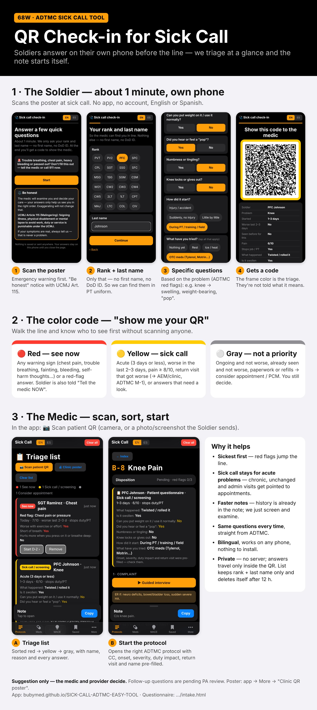

Soldiers answer on their own phone before the line — medics triage by color and the note starts itself. 1-minute demo.Los soldados contestan en su teléfono antes de la fila — los médicos hacen triaje por color y la nota se empieza sola. Demo de 1 minuto.

Demo Soldiers are fictional. Suggested triage only — the medic and provider decide. No server: answers travel only inside the QR; the medic's list keeps rank + last name only and deletes itself after 12 h.Los soldados del demo son ficticios. El triaje es solo una sugerencia — el médico y el proveedor deciden. Sin servidor: las respuestas solo viajan dentro del QR; la lista del médico solo guarda rango + apellido y se borra sola a las 12 h.